Intervaly
V predchádzajúcich kapitolách sme spomínali rôzne pojmy ako základný tón, tercia, kvarta, kvinta či septakord. Aby sme si tieto pojmy presne vysvetlili, musíme sa oboznámiť s intervalmi. Intervaly úzko súvisia s akordami, pretože akordy sú zložené z určitých intervalov. Ten, kto sa dokonale oboznámi s intervalmi, nebude mať neskôr žiadne problémy so zložením akýchkoľvek akordov.
Interval je výšková vzdialenosť dvoch tónov.
• Intervaly delíme na základné a odvodené.
• Základné intervaly sú veľké a čisté. Nachádzajú sa v durovej stupnici
• Zväčšením veľkého alebo čistého intervalu vznikne interval zväčšený.
• Zmenšením veľkého intervalu vznikne interval malý.
• Zmenšením malého alebo čistého intervalu vznikne interval zmenšený.
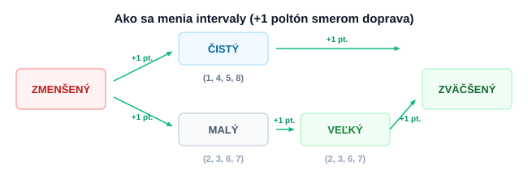
Základné názvoslovie v stupnici C dur
| C | D | E | F | G | A | H | C¹ |
|---|---|---|---|---|---|---|---|
| 1. | 2. | 3. | 4. | 5. | 6. | 7. | 8. |
Veľkosť intervalov v durovej a prirodzenej molovej stupnici
| Stupeň | Názov intervalu | Durová stupnica | Molová stupnica |
|---|---|---|---|
| 1. | Prima | čistá | čistá |
| 2. | Sekunda | veľká | veľká |
| 3. | Tercia | veľká | malá |
| 4. | Kvarta | čistá | čistá |
| 5. | Kvinta | čistá | čistá |
| 6. | Sexta | veľká | malá |
| 7. | Septima | veľká | malá |
| 8. | Oktáva | čistá | čistá |
Tabuľka na určovanie intervalov medzi tónmi
Skratky v hlavičke: Č = Čistá, ZV = Zväčšená, ZM = Zmenšená, M = Malá, V = Veľká
| Tón | Prima | Sekunda | Tercia | Kvarta | Kvinta | Sexta | Septima | Oktáva | ||||||||||||||||||
|---|---|---|---|---|---|---|---|---|---|---|---|---|---|---|---|---|---|---|---|---|---|---|---|---|---|---|
| Č | ZV | ZM | M | V | ZV | ZM | M | V | ZV | ZM | Č | ZV | ZM | Č | ZV | ZM | M | V | ZV | ZM | M | V | ZV | ZM | Č | |
| C | C | C# | Dbb | Db | D | D# | Ebb | Eb | E | E# | Fb | F | F# | Gb | G | G# | Abb | Ab | A | A# | Hbb | Hb | H | H# | Cb | C |
| D | D | D# | Ebb | Eb | E | E# | Fb | F | F# | F## | Gb | G | G# | Ab | A | A# | Hbb | Hb | H | H# | Cb | C | C# | C## | Db | D |
| E | E | E# | Fb | F | F# | F## | Gb | G | G# | G## | Ab | A | A# | Hb | H | H# | Cb | C | C# | C## | Db | D | D# | D## | Eb | E |
| F | F | F# | Gbb | Gb | G | G# | Abb | Ab | A | A# | Hbb | Hb | H# | Cb | C | C# | Dbb | Db | D | D# | Ebb | Eb | E | E# | Fb | F |
| G | G | G# | Abb | Ab | A | A# | Hbb | Hb | H | H# | Cb | C | C# | Db | D | D# | Ebb | Eb | E | E# | Fb | F | F# | F## | Gb | G |
| A | A | A# | Hbb | Hb | H | H# | Cb | C | C# | C## | Db | D | D# | Eb | E | E# | Fb | F | F# | F## | Gb | G | G# | G## | Ab | A |
| H | H | H# | Cb | C | C# | C## | Db | D | D# | D## | Eb | E | E# | F | F# | F## | Gb | G | G# | G## | Ab | A | A# | A## | Hb | H |
* Poznámka k tónovým vzdialenostiam: Niektoré intervaly majú rovnakú sluchovú vzdialenosť (napr. zväčšená sekunda c - dis a malá tercia c - es). Hoci sa hrajú na rovnakom pražci gitary, teoreticky ide o iný interval podľa toho, o aký stupeň voči základnému tónu sa jedná.
Akordy
Akord je súzvuk najmenej troch tónov. Podľa počtu tónov ich delíme na trojzvuky, štvorzvuky, päťzvuky atď. Základným stavebným prvkom, z ktorých sú akordy zložené, sú tercie stacked nad sebou.
Kvintakordy (Trojzvuky)
Vzdialenosť medzi najnižším a najvyšším tónom je čistá alebo pozmenená kvinta. Poznáme štyri základné druhy:
1. Durový kvintakord (tvrdý)
Zloženie: veľká tercia (v.3) + malá tercia (m.3). Krajné tóny tvoria čistú kvintu (č.5).
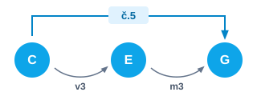
| C | cis | D | dis | E | F | fis | G |
| veľká tercia (v.3) - 2 celé tóny | malá tercia (m.3) - 1.5 tónu | ||||||
Durové akordy značíme veľkými písmenami (C, D, G...).
2. Zväčšený kvintakord
Vznikne z durového zvýšením kvinty. Obsahuje dve veľké tercie nad sebou. Krajné tóny tvoria zväčšenú kvintu (zv.5).
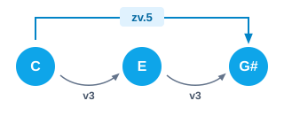
| C | cis | D | dis | E | F | fis | G | gis |
| veľká tercia (v.3) | veľká tercia (v.3) | |||||||
Značenie: plus alebo 5plus (C+, C5+).
3. Molový kvintakord (malý)
Zloženie: malá tercia (m.3) + veľká tercia (v.3). Krajné tóny tvoria čistú kvintu (č.5).
| C | cis | D | es | E | F | fis | G |
| malá tercia (m.3) | veľká tercia (v.3) | ||||||
Značenie: malé písmeno alebo prípona mi (c, Cmi, Ami).
4. Zmenšený kvintakord
Vznikne z molového znížením kvinty. Obsahuje dve malé tercie. Krajné tóny tvoria zmenšenú kvintu (zm.5).
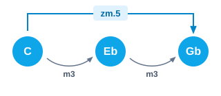
| C | cis | D | es | E | F | ges |
| malá tercia (m.3) | malá tercia (m.3) | |||||
Značenie: Cmi5- alebo Cdim.
5. Durový zmenšený kvintakord
Vznikne z durového znížením kvinty (v.3 + zm.3). Patrí medzi alterované akordy.
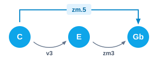
| C | cis | D | dis | E | F | ges |
| veľká tercia (v.3) | zmenšená tercia (zm.3) | |||||
Značenie: C5-.
6. Striedavý (prieťažný) kvintakord s pridanou kvartou (Sus4)
V tomto akorde sa tercia nehrá – je nahradená čistou kvartou (č.4 + v.2).
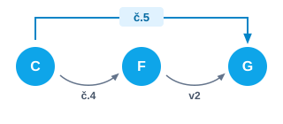
| C | cis | D | dis | E | F | fis | G |
| čistá kvarta (č.4) | veľká sekunda (v.2) | ||||||
Značenie: C4 alebo Csus4.
Hmaty bežne používaných akordov
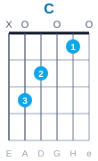
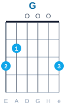
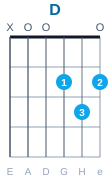
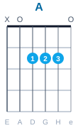
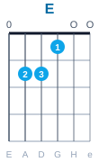
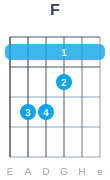
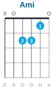
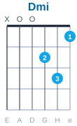
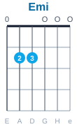
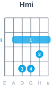
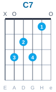
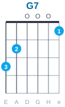
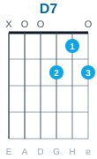
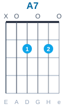
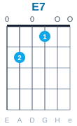
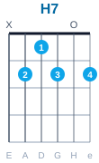
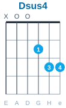
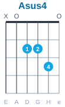
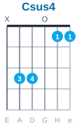
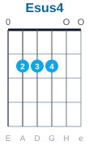
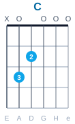
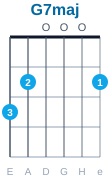
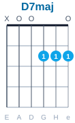
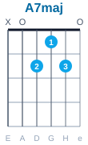
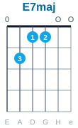
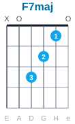
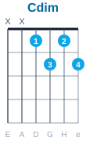
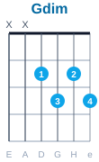
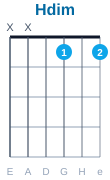
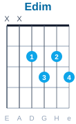
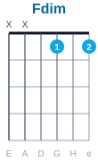
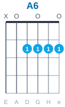
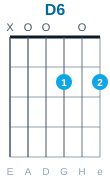
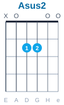
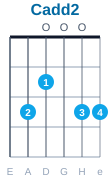
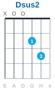
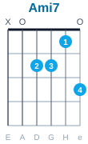
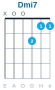
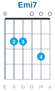
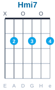
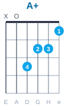
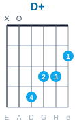
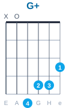
Barré akordy
Hmaty s ukazovákom cez celé pole, ktoré umožňujú transponovať akordy po celom hmatníku.
Barré podľa struny E:
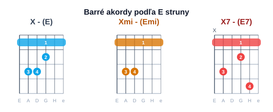
Vysvetlenie: Ak si odmyslíme barové držanie prvým prstom, hmaty vychádzajú z otvorených akordov E, Emi, E7. Basový tón leží na strune E. Tón, ktorý držíme 1. prstom na strune E dosadíme za X do toho hmatu, ktorý držíme.
Barré podľa struny A:
Vysvetlenie: Hmaty sú odvodené od otvorených akordov A, Ami, A7. Basový tón leží na strune A. Tón, torý držíme 1. prstom na strune A dosadíme za X do toho hmatu, ktorý držíme.
Septakordy (Štvorzvuky)
Skladajú sa zo štyroch tónov. K trojzvuku sa pridáva ďalšia tercia, čím vzniká interval septimy medzi základným tónom a posledným pridaným tónom.
Dominantný septakord (Durovo-malý)
Postavený na 5. stupni durovej stupnice (napr. v A dur je to akord E7 = E - Gis - H - D).
| Durový základ | ||||||||||
| C | cis | D | dis | E | F | fis | G | gis | a | B |
| Malá septima (m.7) voči C | ||||||||||
Značenie: C7, G7...
Durovo veľký septakord (Maj7)
Postavený na 1. stupni durovej stupnice (napr. v G dur je to Gmaj7 = G - H - D - Fis).
| Durový základ | |||||||||||
| C | cis | D | dis | E | F | fis | G | gis | a | ais | H |
| Veľká septima (v.7) voči C | |||||||||||
Značenie: C7maj, Cmaj7.
Molovo malý septakord (m7)
Zloženie: molový akord + malá septima (C - Es - G - B).
| Molový základ | ||||||||||
| C | cis | D | es | E | F | fis | G | gis | a | B |
| Malá septima (m.7) voči C | ||||||||||
Značenie: Cmi7, cm7.
Molovo veľký septakord (mMaj7)
Zloženie: molový akord + veľká septima (C - Es - G - H).
| Molový základ | |||||||||||
| C | cis | D | es | E | F | fis | G | gis | a | ais | H |
| Veľká septima (v.7) voči C | |||||||||||
Značenie: Cmi7maj.
Zväčšeno veľký septakord (Maj7/5+)
Zloženie: zväčšený akord + veľká septima (napr. G7maj5+ = G - H - Dis - Fis, alebo pre názornosť od C: C - E - Gis - H).

| Zväčšený základ | |||||||||||
| C | cis | D | dis | E | F | fis | G | gis | a | ais | H |
| Veľká septima (v.7) voči C | |||||||||||
Značenie: C7maj5+ alebo Cmaj7(#5).
Zmenšeno malý septakord (Polozmenšený)
Zloženie: zmenšený kvintakord + malá septima voči základnému tónu.
| Zmenšený základ | ||||||||||
| C | cis | D | es | E | F | ges | G | gis | a | B |
| Malá septima (m.7) voči C | ||||||||||
Značenie: Cmi7/5- alebo Cø.
Zmenšeno zmenšený septakord (Plnozmenšený)
Zloženie: tri malé tercie nad sebou. Každý z tónov akordu môže fungovať ako základný tón.
| Zmenšený základ | |||||||||
| C | cis | D | es | E | F | ges | G | gis | Heses |
| Zmenšená septima (zm.7) voči C | |||||||||
Značenie: Cdim alebo C°.
Durový akord s pridanou sextou (Štvorzvuk)
Zloženie: durový akord + veľká sexta. Tento akord je v podstate obratom molovo malého septakordu (Ami7 = A C E G), líšia sa iba basovým tónom.
| Durový základ | |||||||||
| C | cis | D | dis | E | F | fis | G | gis | A |
| Veľká sexta (v.6) voči C | |||||||||
Značenie: C6.
Molový akord s pridanou sextou (Štvorzvuk)
Zloženie: molový akord + veľká sexta.
| Molový základ | |||||||||
| C | cis | D | es | E | F | fis | G | gis | A |
| Veľká sexta (v.6) voči C | |||||||||
Značenie: Cmi6 alebo cm6.
Dominantný septakord s prieťažnou kvartou (Sus4/7)
Zloženie: akord s prieťažnou kvartou (bez tercie) + malá septima.
| Základ s prieťažnou kvartou | ||||||||||
| C | cis | D | dis | E | F | fis | G | gis | a | B |
| Malá septima (m.7) voči C | ||||||||||
Značenie: C7/4 alebo C7sus4.